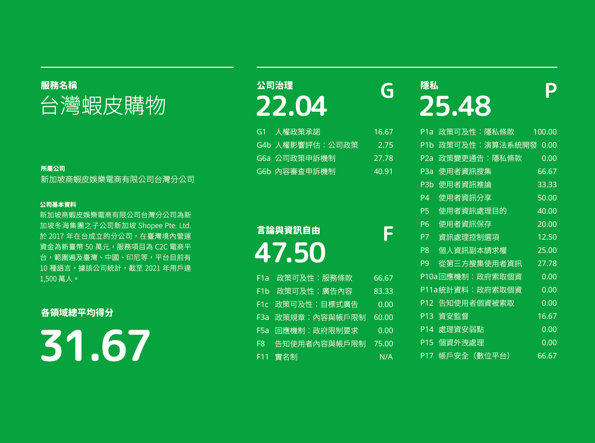
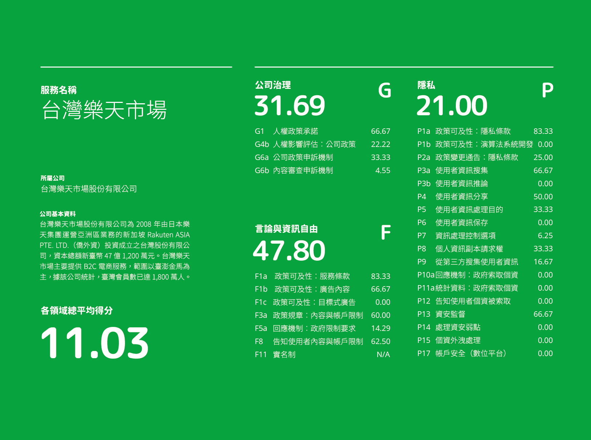
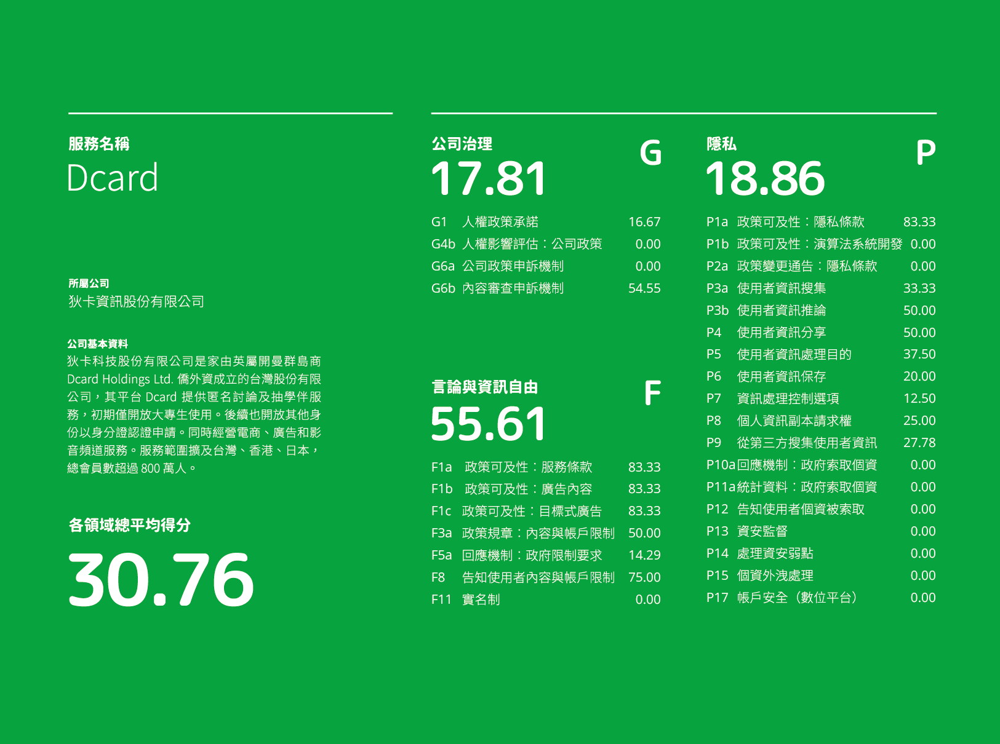

我們採用在地化的 RDR 方法，在共計 58 項 RDR 指標中，挑選與企業數位人權國際政策趨勢、台灣法律規範、以及台灣公民社會倡議需求高度相關的 29 項指標進行評估，對象包括四大主要數位服務產業 (社群媒體、人力銀行、電商、電信公司) 共計二十項數位服務。
綜觀臺灣企業數位人權整體表現，台灣市場中的區域與本土業者，在人權相關政策完整性上相對於歐美業者表現遜色很多。其中又以「公司治理」表現最差，缺乏對國際人權標準的意識和申訴補償機制。「言論與資訊自由」領域表現相對較佳，但公司仍需改善言論審查相關行為的透明度。至於「隱私」領域，則由於臺灣有《個人資料保護法》，因此各公司普遍有達到最低法遵標準，但其政策告知往往流於形式，無法真正維護使用者權益。
至於各產業表現，我們發現台灣市場中的本土和區域業者，以社群媒體產業對言論審查與管理的透明度最高。人力銀行產業雖然因為其讓業主投放徵才廣告、媒合求職者的平台營運模式，故有相對透明的廣告政策，但其總體數位人權表現落後於其他產業。而電商產業則是呈現國際與本土電商表現差異懸殊的狀況。電信公司由於在臺灣是高度的監管化的特許產業，因此電信產業在公司治理的數位人權表現較佳。
  由於所有受評估的業者在人權表現上均有不少的進步空間。我們因此有以下建議:
除了釋出報告，我們也在許多國內外的會議、講座、活動中分享此次台灣研究的成果：